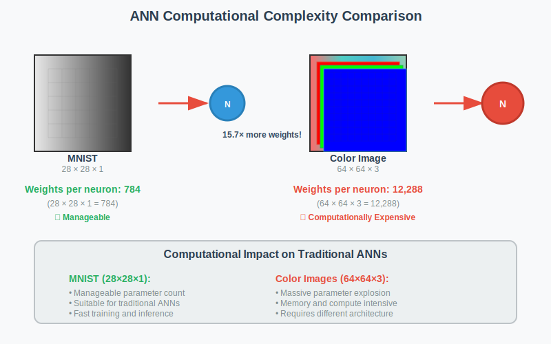
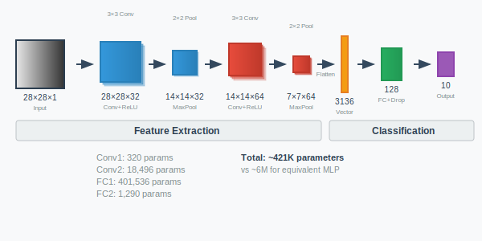
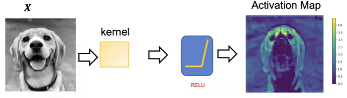

Back to AI Basics: Convolutional Neural Networks (CNNs)
Date Created: May 15, 2025
Date Modified:
Introduction
Like what I have written in previous blog, when we need to process image data, Convolutional Neural Networks (CNNs) are a better choice than standard Multi-Layer Perceptrons. But better choice how? And in what way?

CNNs and ANNs
ANNs
One thing that I haven't touch on last post is why I used "MLP" and now "ANN". The reason is that MLP is a specific type of ANN, which is a more general term.
ANN is the broad term for any model inspired by the structure and function of biological neural networks. MLP is a specific kind of ANN: a feedforward neural network with one or more hidden layers and fully connected neurons. So, all MLPs are ANNs, but not all ANNs are MLPs.
Okay, with that out of the way, one of the largest limitations of traditional forms of ANN is that they tend to struggle with the computational complexity required to compute image data. Common machine learning benchmarking datasets such as the MNIST database of handwritten digits are suitable for most forms of ANN, due to its relatively small image dimensionality of just 28 × 28. With this dataset a single neuron in the first hidden layer will contain 784 weights (28×28×1 where bare in mind that MNIST is normalised to just black and white values), which is manageable for most forms of ANN.
If you consider a more substantial coloured image input of 64 × 64, the number of weights on just a single neuron of the first layer increases substantially to 12,288 numbers. Also take into account that to deal with this scale of input, the network will also need to be a lot larger than one used to classify colour-normalised MNIST digits, then you will understand the drawbacks of using such models.
But why does it matter? Surely we could just increase the number of hidden layers in our network, and perhaps increase the number of neurons within them?
Well, yes, but no. There are 2 reasons for no:
- Simply put, not everyone has unlimited computational power and time to train these huge ANNs.
- Even if you did, the more complex the model, the more likely it is to overfit to the training data.
Overfitting is a critical concern in most if not all machine learning algorithms. When models become too complex, they memorize training data rather than learning generalizable patterns. In reducing ANN complexity, we decrease the number of parameters, which both lowers the risk of overfitting and improves the model's ability to make accurate predictions on new data.
CNNs
So in what way do CNNs solve this problem? And how is it better?
CNNs are a type of deep learning model specifically designed to process structured grid data, such as images. They are particularly effective for image classification tasks due to being set up in a way that best suit the structure of image data.
CNN layers consist of neurons arranged in three dimensions: height, width, and depth (the number of feature maps, not layers). Unlike standard ANNs, each neuron connects only to a small region of the previous layer. For example, an input of size 64×64×3 is gradually reduced to an output of 1×1×n, where n is the number of classes.
CNNs include 3 types of layers: convolutional, pooling, and fully connected layers. When these layers are combined, they form a simple CNN architecture that can learn complex patterns in image data.
To better understand this, let's start with an example architecture.
The Architecture
In this architecture, we have two conv-pool blocks, flattening, dropout regularization, and two fully connected layers ending in a 10-class output. The input is a 28×28×1 image, for now, and the output is a single value representing the class of the image.
| Layer | Type | Details | Output Shape |
|---|---|---|---|
| 0 | Input | Greyscale image, 28x28 pixels | (1, 28, 28) |
| 1 | Conv2d | in_channels=1, out_channels=32, kernel_size=3, stride=1, padding=1 | (32, 28, 28) |
| 2 | ReLU | Activation | (32, 28, 28) |
| 3 | MaxPool2d | kernel_size=2, stride=2 | (32, 14, 14) |
| 4 | Conv2d | in_channels=32, out_channels=64, kernel_size=3, stride=1, padding=1 | (64, 14, 14) |
| 5 | ReLU | Activation | (64, 14, 14) |
| 6 | MaxPool2d | kernel_size=2, stride=2 | (64, 7, 7) |
| 7 | Flatten | start_dim=1 | (3136,) |
| 8 | Dropout | p=0.25 | (3136,) |
| 9 | Linear | in_features=3136, out_features=128 | (128,) |
| 10 | Linear | in_features=128, out_features=10 | (10,) |
Input
As found in other ANNs, the input layer is simply the raw pixel values of the image. Or in this case of MNIST, the 28×28×1 pixel values of the image, which is 1 channel of grayscale values of height 28 and width 28, running from 0 to 255.
Convolutional Layer
Imagine a photographer taking a photo of the same scene using different camera filters:
- One highlights red tones
- One boosts contrast
- One finds edges
Each resulting image is different — but they're all based on the same original photo. That's what convolutional filters are doing — looking for different patterns in the same input.
A convolutional layer applies a set of learnable filters (kernels) to an input image (or feature map). These filters slide across the input spatially and compute a dot product (scalar product) between the filter weights and the input values in that region.
Think of a convolutional layer like using a small see-through film (the filter) to press across a sheet of paper (the image). At each position, the film checks how well the pattern it carries matches that part of the paper — giving a score (dot product). It slides over the paper, from left to right, top to bottom, building a new image that highlights where the pattern fits well.
Each neuron in the output feature map is connected only to a small part (local region) of the input (e.g., a 3×3 patch). That neuron computes a dot product between the filter weights (its parameters) and the input patch. This result becomes one value in the output feature map.
For example, in our architecture, the first convolutional layer has 32 filters, each of size 3×3. This means that each filter will produce a 26×26 feature map (28-3+1=26) after sliding across the input. The output of this layer will be a 26×26×32 tensor, where 32 is the number of filters.
Wait.
Then how come the output shape is (32, 28, 28) instead of (32, 26, 26)?
It is because we use padding. Padding is used to control the spatial dimensions (height and width) of the output after a convolution. The formula for calculating the output size of a convolutional layer is:
\[ \text{Output Size} = \frac{\text{Input Size} + 2 \times \text{Padding} - \text{Kernel Size}}{\text{Stride}} + 1 \]
In our case, we have an input size of 28, a kernel size of 3, a stride of 1, and padding of 1.
\[ \text{Output Size} = \frac{28 + 2 \times 1 - 3}{1} + 1 = \frac{28 + 2 - 3}{1} + 1 = \frac{27}{1} + 1 = 27 + 1 = 28 \]
If padding = 0, then the formula would become 26, meaning no padding reduces spatial size. Padding of 1 is used to preserve size.
Padding can be crucial, as it allows us to control the output size of the feature maps, which can be important for maintaining spatial dimensions throughout the network.
- No padding = input shrinks each time → quickly becomes too small.
- With padding = output can have same spatial size → deeper networks possible, better for edge detection near borders.
Activation Function
After the convolutional layer, we apply an activation function, typically ReLU (Rectified Linear Unit). ReLU replaces all negative values in the feature map with zero, introducing non-linearity to the model. This helps the network learn complex patterns and relationships in the data.
There are other activation functions used such as Leaky ReLU or Tanh/Sigmoid. Still, ReLU remains the default unless there's a specific reason to use another.
Pooling Layer
Pooling layers' job is to simply reduce the spatial dimensions of the feature maps, reducing (or further reducing if padding is not used) the number of parameters within that activation.
Like the convolutional layer, pooling layers also slide across the input feature map, usually in the 2×2 window. Unlike convolutional layers, pooling layers do not have weights or learnable parameters. Instead, they apply a fixed operation, such as max pooling or mean pooling, to the input feature map.
The formula is similar to the convolutional layer. Though Pooling usually has \(Padding = 0\) (no padding) and \(Stride = Kernel Size\) (no overlap). So for a 2×2 pooling layer on 28×28 input, the output size is:
\[ \text{Output Size} = \frac{\text{Input Size} + 2 \times 0 - 2}{2} + 1 = \frac{28 - 2}{2} + 1 = \frac{26}{2} + 1 = 13 + 1 = 14 \]
To be continued